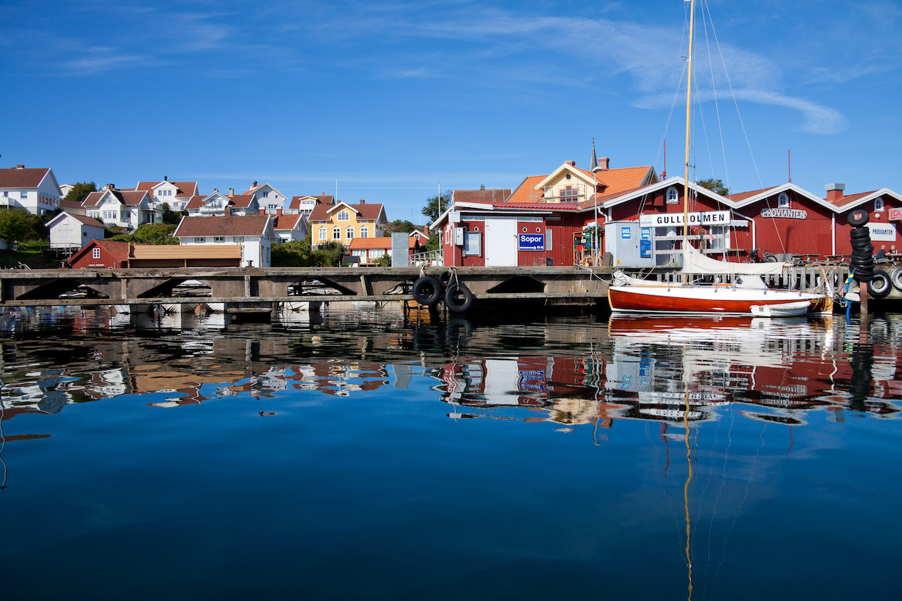

Alla Sveriges fritidsbåtshamnar – samlade på ett & samma ställe
Här får du information om alla Sveriges fritidsbåtshamnar och
deras serviceanläggning. Serviceanläggning kan exempelvis vara
tömningsstation för båtens toalettavfall, landtoalett eller påfyllning
av färskvatten med mera.
Du kan även läsa andra båtägares kommentarer om hamnarna, så att
du kan undvika att lägga till vid en hamn där exempelvis tömningen
är ur funktion.
Hitta en fritidsbåtshamn snabbt och lätt genom vår sökfunktion i
hamnlistan eller i vår hamnkarta.